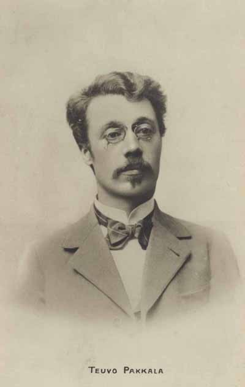

Teuvo Pakkala
Lapsen kokemus tekee tutusta maailmasta uuden.
Pakkala antaa tilaa pienille havainnoille, joita aikuinen saattaisi pitää vähäisinä mutta jotka lapselle ovat koko tilanne.
Etsi teokset kirjastostaElämä ja teokset
Teuvo Pakkala syntyi Oulussa nimellä Teodor Oskar Frosterus. Hän kirjoitti romaaneja, novelleja ja näytelmiä. Kaupunkien vähävarainen väestö ja lasten elämä kuuluvat hänen tuotantonsa keskeisiin aiheisiin.
Lapsia ilmestyi vuonna 1895. Kokoelmassa lapsia tarkastellaan kokevina ja ajattelevina ihmisinä, joiden maailma ei tyhjene aikuisten arvioihin. Pakkalan proosa avaa arjen eroja pienistä tilanteista käsin.
Tyyli ja teemat
Näkökulman läheisyys saa toiveen, pettymyksen tai häpeän tuntumaan suurelta. Huumori syntyy toisinaan lasten ja aikuisten erilaisten tulkintojen väliin. Kertoja antaa lukijan huomata, milloin hyvää tarkoittava aikuinen ei ymmärrä lasta.
Lapsuus · Myötätunto · Arki
Aloita tästä
Lapsia
Novellikokoelma lähestyy lapsen maailmaa tämän omasta kokemuksesta. Lyhyet tilanteet sopivat luettaviksi ja pohdittaviksi yksi kerrallaan.
Kuvaa mielessäsi sama tapahtuma lapsen ja aikuisen silmin. Mikä yksityiskohta vaihtaa merkitystä?